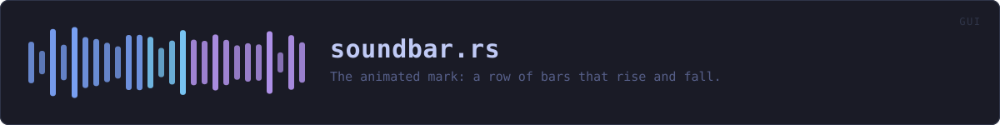

crates/veilvoice-gui/src/soundbar.rs
veilvoice-gui · 349 lines · read the source
The animated mark: a row of bars that rise and fall.
The same mark as the website
website/index.html draws this in CSS as .veil -- a row of <span>s with @keyframes pulse taking each between 16% and 82% of the height over 1.9 seconds, each with its own delay so the row ripples rather than pumping in unison. The left half is drawn in the accent colour and the right half in the "veiled" secondary, which is the product in one picture and matches the icon.
This is that, in egui, with the same period, the same height range and the same delays. Two front-ends showing visibly different marks would be worse than one showing none.
Why it is drawn rather than rendered from a GIF
An animated image would be a committed binary blob, and this project's artwork is generated from source precisely so that nothing in the repository has to be taken on trust. Sixty lines of shape drawing is auditable; a GIF is not.
Cost when it is switched off
With motion disabled the bars are drawn once, at rest, and no repaint is requested. That is the part that matters: an "off" switch that still schedules a frame every 16 ms has turned the animation off visually and left the battery cost behind. The caller decides by passing a [Motion], and the only way to animate is to ask for it.
WHAT CALLS WHAT
The functions this file defines, and the calls between them. An edge means the callee's name appears, called, inside the caller's body — a syntactic reading, not a type-resolved one.
The same graph as Mermaid source
%%{init: {"theme":"base","themeVariables":{"background":"#1a1b26","primaryColor":"#1f2335","primaryTextColor":"#c0caf5","primaryBorderColor":"#7aa2f7","secondaryColor":"#16161e","tertiaryColor":"#16161e","lineColor":"#737aa2","textColor":"#c0caf5","mainBkg":"#1f2335","nodeBorder":"#7aa2f7","clusterBkg":"#16161e","clusterBorder":"#2f3549","fontFamily":"ui-monospace, SFMono-Regular, Consolas, monospace","fontSize":"14px"}}}%%
flowchart TD
n_height_fraction["height_fraction<br/>line 52"]
n_draw(["draw<br/>line 68"])
n_colour_for["colour_for<br/>line 114"]
n_draw --> n_colour_for
n_draw --> n_height_fraction
classDef entry fill:#1f2335,stroke:#7aa2f7,color:#c0caf5
class n_draw entry
classDef helper fill:#1f2335,stroke:#bb9af7,color:#c0caf5
class n_height_fraction,n_colour_for helperThis site loads no third-party script, so it cannot run Mermaid; the diagram above is the same nodes and edges drawn by the generator instead. GitHub renders the source below directly.
ITEMS
| Item | Line | Documentation |
|---|---|---|
PERIOD const | 37 | Seconds for one full rise and fall. |
DELAYS const | 42 | Per-bar phase offsets in seconds, matching the animation-delay values in website/index.html. |
MIN_FRACTION const | 47 | Height as a fraction of the available box, matching 16% and 82%. |
MAX_FRACTION const | 48 | |
height_fraction fn | 52 | How far along its cycle a bar is, in 0..=1, eased the way CSS ease-in-out eases. |
draw pub fn | 68 | Draw the mark at size, returning the response so it can carry a tooltip. |
colour_for fn | 114 | The left half in the accent colour, the right in the veiled secondary -- the same split the website and the icon use. |